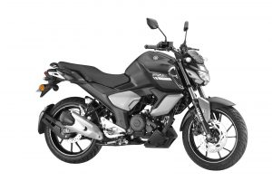
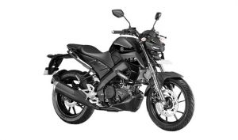

R15 V4 ₨609,900 The all new R15 V4 is the 4th generation of legendry R15 which shares the same DNA with super sports YZF R1. And, The R15M takes the racing quotient to next level with stunning new graphics, 3D Emblem & Special Seat, 155 CC LC4V SOHC FI ENGINE WITH VVA equipped with a Traction Control System and a Quick Shifter.

₨414,900 Weekends are few and the tales waiting to be told are many and its always better to see something once than to hear about it a million times. But only those with a touring spirit and a heightened aggression to conquer the terrain can. Tyres that are hungry for asphalt, power that craves for distances, muscles that love to fight, and agility that is always ready to embrace the surprises planned by the zig zag roads, that’s Fazer 25. Offering perfect balance between YAMAHA’s true blue aggressive super sport bikes and the practical naked roadsters, the all-new 249cc Fazer 25 is the true weekend explorer.
₨474,900 The all-new FZ25 has been developed with a newly designed air-cooled, 249 cc, 4-stroke, SOHC, 2-valve, single-cylinder, high-torque fuel-injected engine on a lightweight frame (152 Kgs) enabling the joy of control as the rider intends. These features establish the FZ25 as a powerful, mid-class, street fighter.

₨440,900 The All New Yamaha FZ-X comes to Nepal as a crossover motorcycle that is inspired by Neo-Retro design thinking. With future proof features that enhance every ride and trademark classic charisma, the Yamaha FZ-X will inspire a whole new generation of motorcyclists. Together, the toughness, the design, comfort, connectivity and safety of this new motorcycle will make every ride feel like a burst of freedom.
₨397,900 Rs. 3,94,900 V3 X-connect, Rs.399,900 Dark Knight variant. The FZS-FI X-Connect takes it to the next level. It brings the most advanced Yamaha Blue Core concept to offer bikers an unmatched experience of performance and efficiency along with new features "Side stand engine cutoff switch" and Bluetooth-enabled "Yamaha Motorcycle Connect X". At its heart is the all new Yamaha Fuel Injection(FI) engine. It uses advanced sensors and actuators to calculate and deliver the optimum amount of fuel to the engine – enhancing both “Performance and Mileage”. The all new FZS FI weighing 135 kgs with improved engine settings makes the bike even more responsive leading to quick initial pickup and delivering smooth passing acceleration.

₨359,900 The Yamaha FZ Series set a new benchmark for biking. The FZS-FI takes it to the next level. It brings the most advanced Yamaha Blue Core concept to offer bikers an unmatched experience of performance and efficiency. At its heart is the all new Yamaha Fuel Injection(FI) engine. It uses advanced sensors and actuators to calculate and deliver the optimum amount of fuel to the engine – enhancing both “Performance and Mileage”. The reduced weight (133kg) makes the bike even more responsive leading to quick initial pickup and delivering smooth passing acceleration. Street Fighter symbol of New Age Macho revving over 1.5 million hearts for 10 years in the ever growing Indian market. The new FZS Fi now comes with Rear Disc Brake.
₨499,900 Rs.504,900 (White and CYW), Rs.499,900 (Normal) MT 15 BS6 is technologically advanced Hyper Naked & dynamic bike of the MT clan , MT-15’s agile handling, wide handle position and ultra light weight of 138kgs leaves the rider with an unimaginable riding experience. It’s intimidating Bi Functional LED headlight, the aggressively styled MT-15 BS6 demands attention and is built to inspire today’s generation of thrill seeking riders like no other bike in it’s class.

₨329,900 The all-new FZ FI takes it to the next level. It brings the most advanced Yamaha Blue Core concept to offer bikers an unmatched experience of performance and efficiency. At its heart is the all-new Yamaha Fuel Injection (FI) Blue Core engine. It uses advanced sensors and actuators to calculate and deliver the optimum amount of fuel to the engine enhancing both performance and mileage. The reduced weight (132kg) makes the bike even more responsive leading to quick initial pickup and delivering smooth passing acceleration. The silhouette of FZ FI given more of a forward lean to create a “Forward Massive Form” design that expresses a sense of hidden power. This was achieved by harmonizing the fuel tank design with its image of pushing forward, the short and compact tail assembly, the short muffler and other elements.

₨271,900 The new Yamaha SZ RR version 2.0 brings a new dimension to the concept of ‘Powerful and Stylish Commuter’. Powered by Yamaha’s unique ‘Blue Core’ technology ideal, it offers outstanding performance and 11% more mileage. New colors and graphics add a refreshing dash of style to the city roads. Turn your everyday commute into an exhilarating experience. SZ RR Version 2.0 has been newly developed with Yamaha’s New Generation Engine Development Ideal ‘Blue Core’ that takes riding enjoyment, fuel efficiency and environmental performance to all new levels. Its key features include A new engine that maintains the feeling of power delivery from the original SZ Series models while greatly improving fuel efficiency (11% improvement vs. 2013 model), Newly designed tubeless tires, Newly designed instrument panel, an array of other features that make it worthy of a 149cc class model, like a handlebar holder with the “SZ” logo and shroud fitted to add a more sporty character.

₨247,900 The new Saluto with Unified Braking System (UBS) will have an air cooled, 4 stroke, SOHC, 2-Valve engine based on the Blue Core Engine Development ideal and lightest in its class at 114 kg. The disk brake models with UBS have been developed for better controls and reliability. Unified Braking System (UBS) is a new age braking concept from Yamaha that supports partial application of the front brake simultaneously when the rear brake is applied completely.
₨569,900 Unleashing Fuel Injection (FI) in the dirt segment, XTZ 150 is the first FI dirt Bike in Nepal. With its balance in fuel usage as well as power, with 12 liters of tank XTZ 150 can conquer every part of Nepal. Its design, resistance, and maneuverability make the XTZ 150 a great option for use on all types of roads. It allows conquering more obstacles including rocks, streams and shallow rivers, floods, and marshes. Ready to move quickly through the city to travel more difficult terrain, thanks to its Swingarm (Link suspension) rear suspension. At the same time, its graphics and colors give it a more sporty appearance. In addition, both wheels are available with a spoke-type arrangement to absorb the bumps in a better way.
₨267,900 The Yamaha Fascino has already won hearts with its unique appearance and slick design. The new Fascino 125 FI comes with the visual impression of a "Classic European styling" along with the new features and technologies including FI technology, bs6 (BS VI) compliance and many more, as it gets an all-new exterior design, higher quality bodywork, newly designed headlight, new gauges and other features.
₨274,900 Rs.274,900 (Drum), Rs.289,900 (Disc) The all-new RayZR is a perfect mix of stealthy looks, aggressive feel/cuts, and thrilling performance as a by-product of the design concept of “Armoured Energy”. Weighing in at 99kgs combined with a 125cc Fi Blue core engine the all-new RayZR is a quick mover on the road. The visually appealing ride now comes with the safety feature of a Built-in side stand engine cut-off switch.

₨474,900 The AEROX 155 has been designed with three focus points - Proud Body Size, Athletic Proportions and the X Centre Motif, under the design concept of a “Heart-Shaking Speedster”. Powered by 155cc Blue Core, LC4V SOHC FI ENGINE WITH VVA.

R15 V4 RACING INSTINCT - PASSING ON THE "R SERIES" DNA. ₨584,900 The all new R15 V4 is the 4th generation of legendry R15 which shares the same DNA with super sports YZF R1. The R15 V4 is equipped with a Traction Control System in all models and a Quick Shifter in Racing Blue. The Racing Blue variant is priced at Rs. 5,94,900.

₨218,900 The all-new YAMAHA Fascino is a performer whose skill and virtuosity enthralls you with grace. And once you are in awe of its charming looks, you can’t step down without experiencing its 113cc Blue Core, air-cooled, 4 stroke, single cylinder engine. Fascino is elegance in motion. And the first thing to catch your eye is the chrome-plated front grill and rear view mirrors that bring back the retro times paired with its modern curves. Your gaze flows with Fascino’s curves as it makes you admire it from one angle to another. Style is not just limited to looks, and Fascino is a testimony of that fact. Fascino smartly uses plastic-resin parts and thorough weight reducing design measures, it offers you easy handling for daily use. Fascino has been casted in three exciting colors so that you never run out of options. So, peg your jeans, step onto this glamorous neo-classic scooter and you will lose count of the heads you turn.
₨220,900 Mean just got meaner. Presenting the all-new Ray ZR Street Rally. A sharp, sleek, swift and stylish machine for those who lives a life like a rally OR THRIVES TO RALLY. So, if it feels to be just a scooter, we suggest you take one for a spin. Powered by a 113cc Blue Core engine. Equipped with a robust telescopic suspension, tubeless tires and a hydraulic disk brake. Geared with an edgy digital console, knuckle guards and plenty of room under-seat. And above all, brutal looks that tell you it’s strictly not for the lazy. Which is why it comes with the message – Don’t Ride. Rally!

₨219,900 RAY Z has a sporty look and feel with a smoked-finish visor for a motorcycle-like image which makes Ray Z more stylish, aluminum rear wing-shaped tandem rider grab-bar, a new instrument panel with a carbon fiber patterned background, a carbon fiber patterned seat cover material, and dynamic coloring and graphics for character that expresses “Aggressive Sportiness”. The new model adopts air-cooled 4-stroke 113cc engine with CVT (Continuous variable transmission) that delivers smooth start-up acceleration and good pickup along with great fuel economy. The engine is based on Yamaha’s engine concept ideal “Blue core” to gives sporty rides with good fuel mileage.